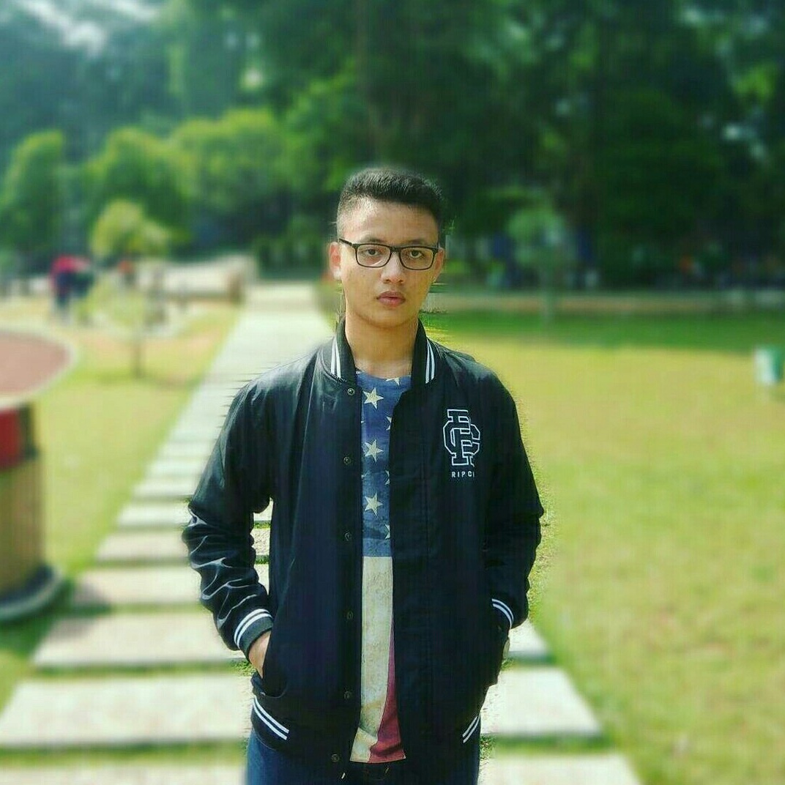
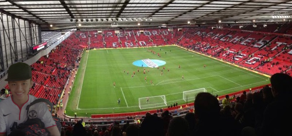

Ricko Dimas Pratama.
Student
Biodata
Nama: Ricko Dimas Pratama
Tanggal Lahir: 15 Februari 2001
Hobi: Photography & menonton pertandingan sepakbola di stadion.
Tentang saya
Perkenalkan nama lengkap saya Ricko Dimas Pratama biasa dipanggil Ricko. Saya adalah anak tunggal. Ayah saya bernama Sutarwoko, berkerja sebagai karyawan swasta. Ibu saya bernama Yanu Arianti, berkerja sebagai ibu rumah tangga.
Saya pertama kali masuk sekolah di tahun 2004 di Taman Kanak-kanak Islam Terpadu Baitussalam, kemudian saya melanjutkan ke SDIT Baitussalam pada tahun 2007-2013 kemudian saya melanjutkannya ke SMPIT Darul Muttaqien . Dan kemudian melanjutkan sekolah lagi ke SMK-SMAK Bogor, di SMK ini saya mengikuti ekstrakulikuler Basket. Saya mempunyai niat untuk melanjutkan bekerja dari SMK-SMAK Bogor ke PT. Paragon.My Photos


Contact Me
Jalan Parung Permata Indah,Kalisuren,Tajurhalang
Phone: 087770525613
Email:rickodimas507@gmail.com